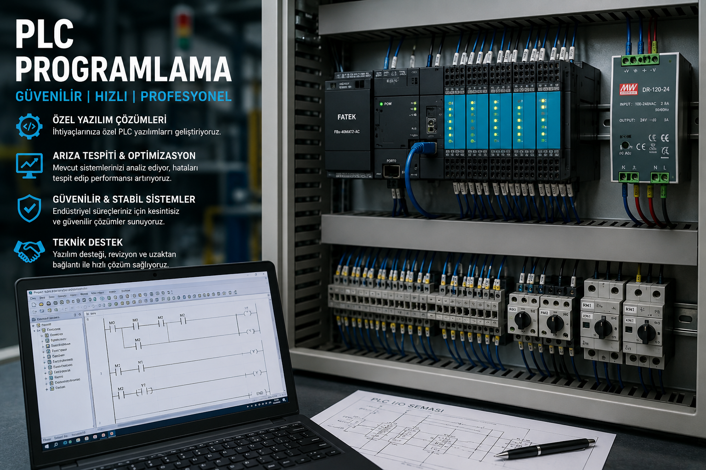

Endüstriyel makineler için PLC yazılımı, makine revizyonu, devreye alma, PLC arıza analizi ve otomasyon çözümleri sunuyoruz. Fatek, Siemens, Delta ve Kinco PLC sistemlerinde profesyonel yazılım desteği sağlıyoruz.

Endüstriyel otomasyon sistemleri için PLC yazılımı, devreye alma, arıza analizi ve makine revizyon hizmetleri sunuyoruz.
Yeni makineler ve otomasyon sistemleri için profesyonel PLC yazılımı geliştiriyoruz.
Eski makineleri günümüz teknolojisine uygun PLC sistemleriyle revize ediyoruz.
Yeni kurulan makinelerin PLC yazılımını yükleyerek güvenli şekilde devreye alıyoruz.
PLC kaynaklı yazılım ve donanım arızalarını analiz ederek hızlı çözümler üretiyoruz.
Fatek PLC programlama, revizyon ve hata giderme hizmetleri sunuyoruz.
Siemens PLC sistemlerinde yazılım geliştirme ve teknik destek sağlıyoruz.
Delta PLC sistemleri için otomasyon yazılımı ve devreye alma hizmetleri veriyoruz.
Kinco PLC yazılımı, parametre ayarları ve makine entegrasyonu gerçekleştiriyoruz.
Uzaktan veya yerinde PLC yazılım desteği, bakım ve teknik danışmanlık hizmeti sunuyoruz.
Endüstriyel otomasyon projelerinde güvenilir, hızlı ve sürdürülebilir çözümler sunuyoruz.
Makinenize özel optimize edilmiş PLC yazılımları geliştiriyoruz.
Eski makineleri yeni PLC sistemleriyle modernize ederek performansını artırıyoruz.
Yazılım testleri tamamlandıktan sonra sistemleri güvenli şekilde devreye alıyoruz.
Yazılım ve otomasyon kaynaklı arızaları hızlı şekilde analiz edip çözüyoruz.
Üretim hatları, konveyörler ve endüstriyel makinelerde PLC çözümleri sunuyoruz.
Devreye alma sonrasında bakım, güncelleme ve teknik destek sağlamaya devam ediyoruz.
PLC yazılımı, makine revizyonu ve devreye alma hizmetlerini Bandırma ve çevresindeki işletmelere sunuyoruz.
PLC yazılımı, makine revizyonu, devreye alma, PLC arıza analizi, Fatek, Siemens, Delta ve Kinco PLC programlama hizmetleri sunuyoruz.
PLC yazılımı, makine revizyonu ve otomasyon hizmetlerimiz hakkında sık sorulan sorular.
Endüstriyel otomasyon projelerinde doğru analiz, güvenilir yazılım ve sürdürülebilir teknik destek sunuyoruz.